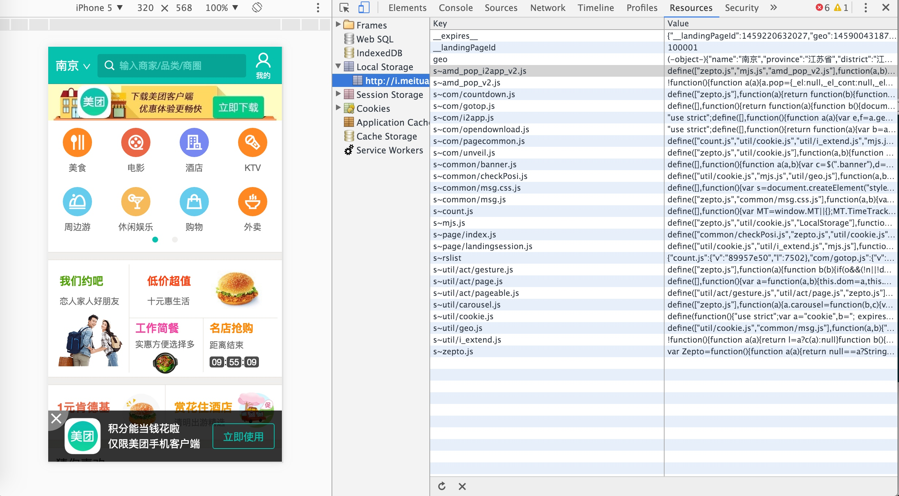

Java传值还是传引用
Java都是按值传递的。
我们要这样去理解这个问题：
Dog myDog;
myDog并不是一个Dog，而是一个指针指向了一个Dog对象。
Dog myDog = new Dog("Rover");
foo(myDog);
这个程序实际上是将new Dog("Rover")这个对象地址的值给了foo方法
假设new Dog("Rover")这个对象在内存地址的42，也就是说我们将42这个地址给了foo方法
public void foo(Dog someDog)
{
someDog.setName("Max"); // AAA
someDog = new Dog("Fifi"); // BBB
someDog.setName("Rowlf"); // CCC
}
someDog被设置为了42- 在
AAA行- someDog这个对象（
42）被要求改名为Max
- someDog这个对象（
- 在
BBB行- 生成一个新的
Dog对象，比如说在地址74 - 我们将
someDog这个对象设置成74
- 生成一个新的
- 在
CCC行someDog这个对象（74）被要求改名为Rowlf
- 最后，我们返回结果
因为我们传的只是42这个内存地址的值，所以返回后，someDog还是（42），只是他的名字变成了Max
Reference
http://stackoverflow.com/questions/40480/is-java-pass-by-reference-or-pass-by-value
`Local Storage`缓存
因为WAP触屏版的面向对象都是使用智能手机浏览器访问的用户，而基本上所有智能手机的浏览器都支持Local Storage，这样就可以使用Local Storage缓存一些东西。
之前都是使用Local Storage缓存一些用户信息，当做cookies使用，甚至还有一段时间Local Storage里的内容不能通过浏览器‘清楚访问痕迹’的功能删除，就使用Local Storage作为存储用户唯一标识的地方。
现在为WAP触屏版的优化思路就是将js和css文件存到Local Storage中，用户之后访问需要js和css的时候都从Local Storage中取，而不从网络中拉了。
美团的WAP触屏版是一个做的比较极端的例子

第一阶段
其实对于规模不是很大的网站，上线的流程不会特别严格，特别规范，那么对css和js经常的修修补补是不可避免的。如果使用Local Storage缓存所有的css和js，那么就还要制定一套Local Storage缓存失效的规则。所以我们暂时先只对用到的第三方js和css（jquery，Framework7等）进行缓存
参考了《Web移动端使用localStorage缓存Js和css文件》1，这套代码基本实现了使用Local Storage缓存js和css文件的基本需求，对于简单的网站页面效果也是明显的。
但是有两个问题：
1、不能跨域。程序是用ajax请求css和js的，由于ajax不能跨域，所以必须保证静态资源文件和网站要在同一个域名下，这个跟动静分离的思想有所违背。比较糙的解决方法就是将要缓存的文件映射一份在网站同域名下。
2、文件不能顺序加载。程序在拿到css和js文件后，将这些文件的内容head.appendChild(js/css)到html中，这样会让这些文件同步加载到html中，而缓存的文件加载的顺序不能保证一定在非缓存文件之前，如果之后的js的文件依赖于缓存的js先加载，那么就会报错。
举个例子：
<head>
<script>
whir.res.loadJs("jquery", __BASE_SERVER__ + "/js/jquery-1.8.3.min.js");
</script>
<script type="text/javascript" src="${__static_server__}/js/needsJQUERY.js"></script>
</head>
第二个文件需要jquery先加载，然后使用jquery的函数，但是jquery被缓存，且不能保证会在第二个文件处理前加载好。这样就会报错。
程序对顺序加载的解决方案是使用回调函数，保证数序：
whir.res.loadJs("jquery", __BASE_SERVER__ + "/js/jquery-1.8.3.min.js"), function(){
whir.res.loadJs("needsJQUERY", "/needsJQUERY.js");
});
这种解决的方法对于结构简单的页面是有效的，但是我们的页面都是依赖一个公用的宏，在公用的宏中申明了所有地方放的js和css，每个页面自己又有一套本页面有效的js和css，对于这种callback随页面变化的情况，前面说的解决方法不太适用。
比较糙的解决方法就是在加载最后一个缓存js文件的时候，callback方法中写location.reload();，页面强行刷新下。
第二阶段
第二个问题相对来说更棘手，所以我们先要解决这个问题。
我们的思路是这样的：
- 对于第一次来网站的用户，
Local Storage为空，我们先使用正常的js和css引用的方法，然后再将js和css放入Local Storage中，但这一次不用Local Storage中缓存的文件 - 对于之前来过网站的用户，
Local Storage是有缓存的js和css，所以直接使用这些缓存的文件
判别用户之前有没有来过网站，我们就拿一个cookie来记录，如果用户有这个cookie值，则判断用户来过；如果没有这个值，则判断用户没有来过。
再者，如果用户的这个cookie值和我们pageVersion不一样，说明我们要缓存的js或者css版本号改变了，这时候，我们会先让cookie为空，将用户理解为一个全新的、第一次来的用户，然后继续整个流程。
这样好像就解决了用户第一次来，还要强制刷新页面的问题。直到我们用safari或者uc浏览器无痕浏览的功能访问网站的时候。
safari的无痕浏览模式不支持Local Storage，并且会在localstorage.setItem的时候报错，自动停止程序，导致咱们缓存js和css时，用户访问的cookie写成功了，但是缓存没写进去。
uc浏览器的无痕浏览模式也不支持Local Storage，并且在将cookie值更改以后，新旧两个cookie都会同时存在，这样我们的程序就变成了死循环，检测到用户访问过，以为有缓存，实际没有。
所以我们对程序又做了修正:
- 将添加
cookie操作加入到loadJs的回调函数中 - 在保证
localstorage.setItem成功运行之后，我们才会把cookie值记录进去
<script type="text/javascript" src="${__static_server__}/js/localstorage.js"></script>
<#if local_storage_version != ''>
<script>
var lsv = "";
var name = "lsv=";
var ca = document.cookie.split(";");
for (var i = 0; i < ca.length; i++) {
var c = ca[i];
while (c.charAt(0) == " ") {
c = c.substring(1);
}
if (c.indexOf(name) == 0) {
lsv = c.substring(name.length, c.length);
}
}
if (lsv != whir.res.pageVersion || (window.localStorage && lsv != localStorage.getItem("version"))) {
var d = new Date();
d.setTime(d.getTime() + (365 * 24 * 60 * 60 * 1000));
var expires = "expires=" + d.toUTCString();
document.cookie = "lsv=;" + expires;
location.reload();
}
</script>
<#else>
<script type="text/javascript" src="${__static_server__}/js/jquery-1.8.3.min.js"></script>
<script type="text/javascript" src="${__static_server__}/js/framework7/js/framework7.min.js"></script>
</#if>
<script>
whir.res.loadJs("jquery", __BASE_SERVER__ + "/js/jquery-1.8.3.min.js"); whir.res.loadJs("framework7js", __BASE_SERVER__ + "/js/framework7/js/framework7.min.js", function () {
myApp = new Framework7();
$$ = Dom7;
$.cookie('lsv', whir.res.pageVersion, {path: '/', expires: 365});
});
</script>
localstorage.js
var whir = window.whir || {};
var refreshYN = false;
whir.res = {
pageVersion: "121", //页面版本，由页面输出，用于刷新localStorage缓存
//动态加载js文件并缓存
loadJs: function (name, url, callback) {
if (window.localStorage) {
var xhr;
var js = localStorage.getItem(name);
if (js == null || js.length == 0 || this.pageVersion != localStorage.getItem("version")) {
refreshYN = true;
if (window.ActiveXObject) {
xhr = new ActiveXObject("Microsoft.XMLHTTP");
} else if (window.XMLHttpRequest) {
xhr = new XMLHttpRequest();
}
if (xhr != null) {
xhr.open("GET", url);
xhr.send(null);
xhr.onreadystatechange = function () {
if (xhr.readyState == 4 && xhr.status == 200) {
js = xhr.responseText;
localStorage.setItem(name, js);
localStorage.setItem("version", whir.res.pageVersion);
// 确保浏览器支持localStorage.setItem
if (localStorage.getItem("version") == whir.res.pageVersion) {
if (callback != null) {
callback(); //回调，执行下一个引用
}
}
}
};
}
} else {
whir.res.writeJs(js);
if (callback != null) {
callback(); //回调，执行下一个引用
}
}
} else {
whir.res.linkJs(url);
}
},
loadCss: function (name, url) {
if (window.localStorage) {
var xhr;
var css = localStorage.getItem(name);
if (css == null || css.length == 0 || this.pageVersion != localStorage.getItem("version")) {
if (window.ActiveXObject) {
xhr = new ActiveXObject("Microsoft.XMLHTTP");
} else if (window.XMLHttpRequest) {
xhr = new XMLHttpRequest();
}
if (xhr != null) {
xhr.open("GET", url);
xhr.withCredentials = true;
xhr.send(null);
xhr.onreadystatechange = function () {
if (xhr.readyState == 4 && xhr.status == 200) {
css = xhr.responseText;
localStorage.setItem(name, css);
localStorage.setItem("version", whir.res.pageVersion);
}
};
}
} else {
css = css.replace(/images\//g, "style/images/"); //css里的图片路径需单独处理
whir.res.writeCss(css);
}
} else {
whir.res.linkCss(url);
}
},
//往页面写入js脚本
writeJs: function (text) {
var head = document.getElementsByTagName('HEAD').item(0);
var link = document.createElement("script");
link.type = "text/javascript";
link.innerHTML = text;
head.appendChild(link);
},
//往页面写入css样式
writeCss: function (text) {
var head = document.getElementsByTagName('HEAD').item(0);
var link = document.createElement("style");
link.type = "text/css";
link.innerHTML = text;
head.appendChild(link);
},
//往页面引入js脚本
linkJs: function (url) {
var head = document.getElementsByTagName('HEAD').item(0);
var link = document.createElement("script");
link.type = "text/javascript";
link.src = url;
head.appendChild(link);
},
//往页面引入css样式
linkCss: function (url) {
var head = document.getElementsByTagName('HEAD').item(0);
var link = document.createElement("link");
link.type = "text/css";
link.rel = "stylesheet";
link.rev = "stylesheet";
link.media = "screen";
link.href = url;
head.appendChild(link);
}
};
第三阶段
对于跨域的处理，我们采用了CORS的方式，主要就是在Nginx服务器上配置一下，比较简便。


Copyright © 2016 Powered by MWeb, Theme used GitHub CSS.